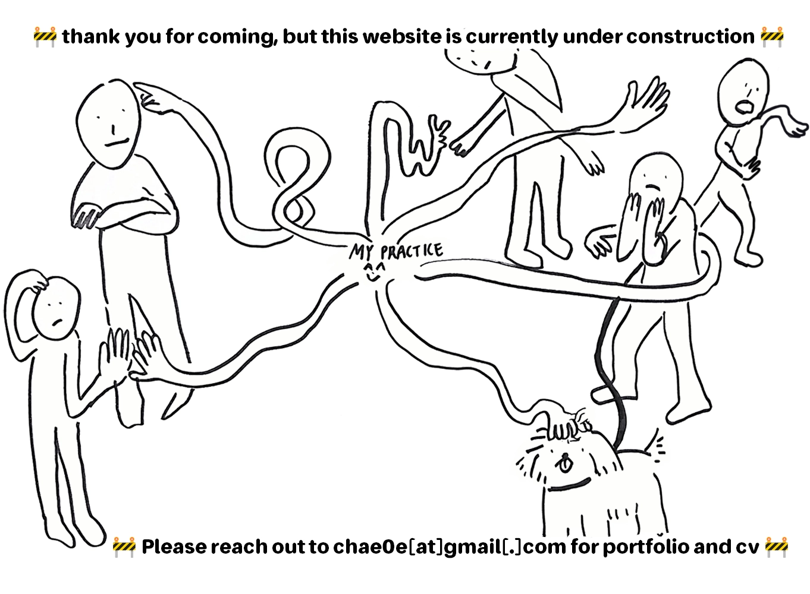

In its intimate smallness the pocket holds understandings, techniques, and experiences inadmissible to 'proper' society. The pocket has long been a source of vulgar insinuation. The details of its contents are visible only as raised outlines: a swelling near the crotch, or on a breast pocket. It is a space that troubles the neat edifice of normality: suggestive and secretive in equal measure. Its promises are ambiguous-it cannot make the grand claims of sustenance that the bag is capable of - but tucked inside we might find weird lives and weird literature, where the games of gender and genre are played by new, tricksy rules.
(...)
If the carrier bag theory finds its application in the novel, a pocket theory of fiction sweeps up texts less easy to categorize, its small form drawing together all sorts of marginal and misfit works. The novel's authorial integrity makes it naturally a bag, unlike these chimerical narratives written by those whose multiplying identities make them slippery and ambiguous. Gender-deviantsm sexual-miscreants, climate-antagonists, capitalism-survivors and border-crossers: the authors' multiple identities and creations jostle together in the pocket -- a handful of genre-less collections, uncategorisable poems and meta-textual novels. This essay itself is full of joins and seams, proceeding through a series of small arguments stiched together. Just as Le Guin's bag exists as a literary form, here the pocket provides both animating metaphor and structural device. Inserting different objects will change a pocket's shape: as the texts are placed inside this essay, the metaphor also alters.
Whether from the privacy of one's own bedroom, or publicly in a community of others, the pocket facilitates participation in a grame of secret intimacies and misdirection.